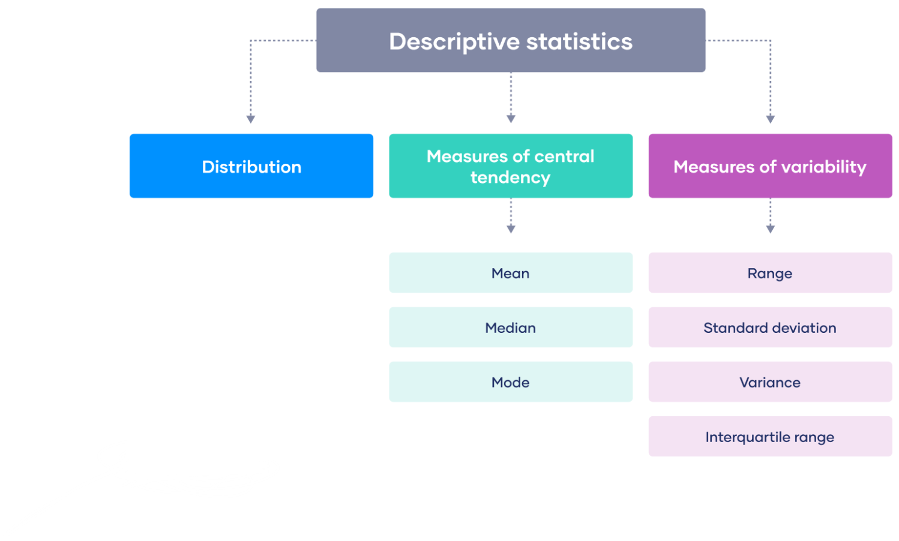
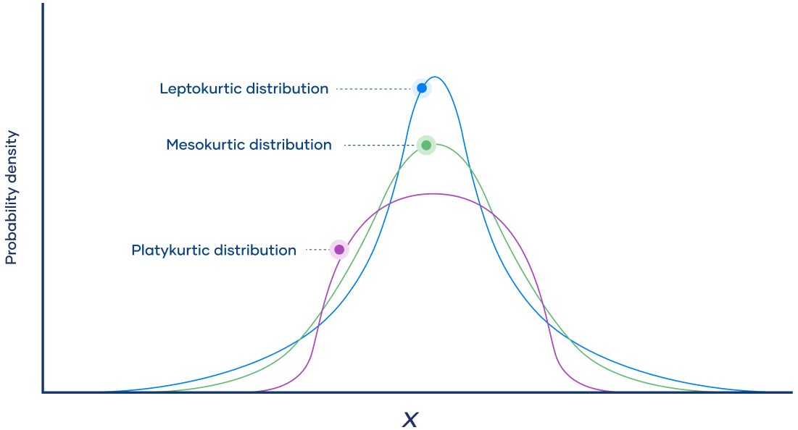

Descriptive statistics is a branch of statistics that deals with the collection, organization, analysis, and presentation of data. It involves summarizing and describing the main features of a dataset, such as the central tendency, variability, and distribution of the data.

Image credit: Scribbr
Some common measures of descriptive statistics include:
Measures of central tendency:
Mean: The mean is the arithmetic average of a dataset and is calculated by adding up all the values in the dataset and dividing by the total number of values. If
\(x_1, x_2, x_3, ..... x_i ...., x_k\) have frequency \(f_1, f_2, f_3,…… f_k\) then
$$\mu = \sum_i \frac{f_i x_i}{N}$$
i.e.
$$\text{Mean} = \frac{\text{sum of all values}}{\text{total number of values}}$$
Example: if we have a dataset of test scores for a class of students: 70, 80, 90, 85, and 75, we can calculate the mean by adding up all the scores and dividing by the total number of scores: Mean = (70 + 80 + 90 + 85 + 75) / 5 = 80. So the mean test score for the class is 80.
The mean is commonly used in statistics to summarize and describe a dataset, and is often used as a benchmark for making comparisons between different groups or distributions. However, the mean can be affected by extreme values or outliers, which can skew the results. In such cases, it may be more appropriate to use other measures of central tendency, such as the median or mode, to represent the typical or central value of the dataset.
median:
The median is the middle value of a dataset when the values are arranged in order of magnitude. It is used to represent the typical or central value when the data are skewed or have outliers.
How to calculate?: To calculate the median, follow these steps:
Arrange the values in the dataset in order from smallest to largest (or vice versa).
If the dataset has an odd number of values, the median is the middle value. For example, in the dataset {1, 3, 5, 7, 9}, the median is 5 because it is the middle value.
If the dataset has an even number of values, the median is the average of the two middle values. For example, in the dataset {1, 3, 5, 7, 9, 11}, the two middle values are 5 and 7, so the median is (5+7)/2 = 6.
The median is a useful measure of central tendency for datasets that have outliers or extreme values, as it is less sensitive to these values than the mean. Additionally, the median is appropriate for ordinal data, where the values have an inherent order but the distance between values is not meaningful (e.g. ranks, grades).
Mode:
The mode is the value that occurs most frequently in a dataset. It is used to represent the most common or typical value when the data are categorical or have a discrete distribution. Unlike mean and median, the mode does not take into account the actual numerical values of the data points, but only their frequencies.
How to calculate?: The mode can be calculated for any type of data, including nominal, ordinal, interval, and ratio data. In a dataset with a single mode, there is only one value that occurs more frequently than any other value. However, it is also possible to have datasets with multiple modes, where there are several values that occur with the same highest frequency.
Example: Here is an example of how to calculate the mode for a dataset of heights:
Sort the dataset in ascending order: 62, 64, 66, 66, 68, 68, 68, 70, 70, 72.
Count the frequency of each value: 62 (1), 64 (1), 66 (2), 68 (3), 70 (2), 72 (1).
Identify the value with the highest frequency: 68.
The mode of the dataset is 68, indicating that 68 is the most common height in the dataset.
Note that in some cases, a dataset may not have a mode if all the values occur with the same frequency. In other cases, the mode may not be a meaningful measure of central tendency if there are extreme values or outliers that skew the distribution.
The mode is often used in conjunction with other measures of central tendency, such as mean and median, to gain a better understanding of the underlying distribution of the data. It is especially useful for describing skewed distributions, where the mean and median may not accurately represent the central tendency of the data.
Choice of which measure: The choice of which measure of central tendency to use depends on the nature of the data and the research question. The mean is commonly used when the data are normally distributed and have a symmetrical distribution. The median is used when the data are skewed or have outliers. The mode is used when the data are categorical or have a discrete distribution.
Measures of variability:
Measures of variability are statistical measures that describe the spread or dispersion of a dataset. Some common measures of variability include:
Range: The range is the difference between the maximum and minimum values in a dataset. It is the simplest measure of variability but can be heavily influenced by outliers. It is calculated using the formula:
Example: if a dataset consists of the following values: 2, 5, 7, 8, 12, the range would be calculated as:
Range = 12 - 2 = 10
Variance: The variance measures how much the values in a dataset vary from the mean. It is calculated by taking the average of the squared differences between each value and the mean. It is calculated using the formula:
$$\text{Variance} = \sum \frac{(x-\mu)^2}{n}$$
Variance is commonly used in statistical analysis and can be influenced by extreme values.
where \(\sum\) represents the sum of, \(x\) represents each value in the dataset, \(\mu\) represents the mean of the dataset, and \(n\) represents the number of values in the dataset.
Example: If a dataset consists of the following values: 10, 15, 20, 25, 30, and the mean is calculated to be 20, the variance would be calculated as:
Standard deviation: Standard deviation is a measure of how spread out a set of data is from its mean or average. It tells you how much the data deviates from the average. A low standard deviation indicates that the data is clustered closely around the mean, while a high standard deviation indicates that the data is spread out over a larger range of values. It is a commonly used measure of variability and is often preferred over the variance because it is expressed in the same units as the original data. The formula for standard deviation is:
$$\sigma = \sqrt{\frac{\sum (x-\mu)^2}{n}}$$
(Standard deviation of the population)
where:
\(\sigma\) is the standard deviation
\(\sum\) is the sum of all the data points
\(x\) is each individual data point
\(\mu\) is the mean or average of the data
\(n\) is the total number of data points
Method: To find the standard deviation, you first subtract each data point from the mean, square the result, sum up all the squared differences, divide by the total number of data points, and finally, take the square root of the result.
Example: let's say you have the following set of data: {2, 4, 6, 8, 10}.
Next, calculate the difference between each data point and the mean: (2 - 6) = -4, (4 - 6) = -2, (6 - 6) = 0, (8 - 6) = 2, (10 - 6) = 4.
Then, square each of these differences and add up all the squared differences: \((-4)^2 = 16, (-2)^2 = 4, (0)^2 = 0, (2)^2 = 4, (4)^2 = 6.\)
Divide by the total number of data points: 16 + 4 + 0 + 4 + 16 = 40.
Finally, take the square root of the result: 40 / 5 = 8.
So, the standard deviation of this set of data is approximately 2.83.
Interquartile range (IQR): The IQR is the difference between the third quartile (the value above which 75% of the data falls) and the first quartile (the value below which 25% of the data falls). It is a measure of the spread of the middle 50% of the data and is less influenced by extreme values than the range.
The formula for calculating the IQR is as follows:
$$\text{IQR} =Q_3 -Q_1$$
Where \(Q_3\) is the third quartile and \(Q_1\) is the first quartile. The quartiles are calculated by dividing the dataset into four equal parts. The first quartile (i.e. \(Q_1\)) represents the 25th percentile of the dataset, and the third quartile (i.e. \(Q_3\)) represents the 75th percentile.
Example: Consider the following dataset: 1, 3, 5, 6, 7, 8, 9, 10, 11, 15.
The first quartile (\(Q_1\)) is 4 and the third quartile (\(Q_3\)) is 10. Therefore, the IQR is:
$$IQR = Q_3 - Q_1 = 10 - 4 = 6$$
This means that the middle 50% of the dataset (between the 25th and 75th percentiles) falls within a range of 6.
Quartiles: Quartiles are a way to divide a dataset into four equal parts or quarters. Quartiles are used to understand the distribution of a dataset and to calculate other measures of variability such as the interquartile range.
There are three quartiles that divide a dataset into four parts:
The first quartile (\(Q_1\)) is the 25th percentile of the dataset. It divides the dataset into the bottom 25% and the top 75%.
The second quartile (\(Q_2\)) is the median of the dataset. It divides the dataset into two equal parts.
The third quartile (\(Q_3\)) is the 75th percentile of the dataset. It divides the dataset into the bottom 75% and the top 25%.
Mean absolute deviation (MAD): The mean absolute deviation (MAD) is a measure of variability that indicates how much the observations in a dataset deviate, on average, from the mean of the dataset. The MAD is the average of the absolute differences between each value and the mean. It is a robust measure of variability that is less sensitive to outliers than the variance and standard deviation.
Formula: MAD is calculated by finding the absolute difference between each data point and the mean, then taking the average of those absolute differences. The formula for calculating MAD is as follows:
$$\text{MAD} = \frac{1}{n}\sum_i^n |x_i - \mu|$$
Where \(n\) is the number of observations in the dataset, \(x_i\) is the value of the ith observation, \(\mu\) is the mean of the dataset, and \(\sum\) represents the sum of the absolute differences.
Example: For example, consider the following dataset: 2, 3, 5, 6, 7, 8, 9, 10, 11, 15
To calculate the MAD, we first find the mean of the dataset:
The MAD for this dataset is 3.34, which means that, on average, each observation deviates from the mean by approximately 3.34.
These measures of variability are useful in providing information about how much the values in a dataset vary from each other. The appropriate measure to use depends on the specific characteristics of the data and the research question being asked.
Measures of distribution:
Skewness and kurtosis are two statistical measures used to describe the shape of a probability distribution.
Skewness: Skewness measures the degree of asymmetry in a distribution. A distribution with a positive skewness has a longer tail on the positive side of the mean, while a negative skewness means the tail is longer on the negative side of the mean. A perfectly symmetrical distribution has a skewness of zero.
This is the formula described above that uses the third moment of the distribution to measure skewness.
Sample skewness: This is a formula that uses the sample mean, standard deviation, and third central moment to estimate the skewness of the distribution. The formula for sample skewness is:
(known as Fisher-Pearson standardized moment coefficient)
where \(n\) is the sample size, \(\mu\) is the sample mean, \(x_i\) is the \(i\)-th observation in the sample, and \(\sigma_s\) is the sample standard deviation.
Sample standard deviation: The sample standard deviation measures the spread of the data around the mean. It tells you how much the individual data points deviate from the mean, on average. Note that the sample standard deviation is calculated using \(n - 1\) in the denominator instead of \(n\), which is known as Bessel's correction. This is because using \(n\) instead of \(n-1\) tends to underestimate the true variance of the population from which the sample was drawn.
Care should be taken when getting the standard deviation because the standard deviation is different from the standard deviation of a sample. If the problem describes a situation dealing with a sample or subset of a group, then the sample standard deviation, s, should be used.
How to Transform Skewed Data? The graph of skewed data may be transformed into a symmetrical, balanced bell curve shape by changing the data using various methods. The selection of which method to use depends on the characteristic of the data set and its behavior. Here are the most common ways of correcting the skewness of data distribution:
Logarithmic transformation
Square root transformation
Inverse transformation
Box-Cox transformation
It is important to note that transforming the data may not always be necessary or appropriate. The choice of transformation depends on the distribution of the data, the research question, and the statistical model being used. In addition, some transformations may change the interpretation of the data, so it is important to carefully consider the implications of any transformations before applying them.
Quartile skewness: This measure of skewness is based on the difference between the median and the mode of the distribution. Specifically, the quartile skewness is defined as:
where \(Q_1\) and \(Q_3\) are the first and third quartiles of the distribution, and the median is the second quartile.
Each of these measures of skewness has its own strengths and weaknesses, and the choice of measure may depend on the context and purpose of the analysis.
Kurtosis: Kurtosis is a statistical measure that describes the shape of a distribution by measuring the degree of peakedness or flatness of the distribution compared to the normal distribution. A distribution with high kurtosis indicates that the data have many outliers or extreme values, while a distribution with low kurtosis indicates that the data are more spread out and have fewer outliers.
How to calculate kurtosis: Mathematically speaking, kurtosis is the standardized fourth moment of a distribution. Moments are a set of measurements that tell you about the shape of a distribution.
Moments are standardized by dividing them by the standard deviation raised to the appropriate power.
Kurtosis of a population: The following formula describes the kurtosis of a population:
\(\tilde{\mu}_4\) is the standardized fourth moment
\(\mu_4\) is the unstandardized central fourth moment
\(\sigma\) is the standard deviation
Kurtosis of a sample: The kurtosis of a sample is an estimate of the kurtosis of the population.
It might seem natural to calculate a sample’s kurtosis as the fourth moment of the sample divided by its standard deviation to the fourth power. However, this leads to a biased estimate.
The formula for the unbiased estimate of excess kurtosis includes a lengthy correction based on the sample size:
Mesokurtic distribution: A mesokurtic distribution has a kurtosis value of zero and is similar in shape to the normal distribution. It has a moderate degree of peakedness and is neither too flat nor too peaked.
Leptokurtic distribution: A leptokurtic distribution has a kurtosis value greater than zero and is more peaked than the normal distribution. It has heavier tails and more outliers than a normal distribution.
Platykurtic distribution: A platykurtic distribution has a kurtosis value less than zero and is flatter than the normal distribution. It has fewer outliers and less extreme values than a normal distribution.

Image credit: scribbr
It's important to note that kurtosis can only be interpreted in the context of the specific distribution being analyzed. A high or low kurtosis value does not necessarily indicate that the data are problematic or that any action needs to be taken. Rather, kurtosis can provide insight into the shape of the distribution and can help to identify potential issues with the data.
Descriptive statistics are commonly used in fields such as business, economics, psychology, sociology, and healthcare, among others. They are an important tool for making informed decisions and drawing meaningful conclusions from data.
Probability distributions and hypothesis testing
Probability is a subject that deals with uncertainty.
In everyday terminology, probability can be thought of as a numerical measure of the likelihood that a particular event will occur.
Probability values are assigned on a scale from 0 to 1, with values near 0 indicating that an event is unlikely to occur and those near 1 indicating that an event is likely to take place.
Suppose that an event E can happen in h ways out of a total of n possible equally likely ways. Then the probability of occurrence of the event (called its success) is denoted by
$$p=Pr\{E\}=\frac{h}{n} ~~~~~~~~~~~~~~~ (\text{success probability}) $$
The probability of non-occurrence of the event (called its failure) is denoted by
$$𝑞=1−𝑝 \rightarrow 𝑝+𝑞=1 $$
Conditional probability; Independent and dependent events
If \(E_1\) and \(E_2\) are two events, the probability that \(E_2\) occurs given that \(E_1\) has occurred is denoted by
$$Pr\{E_2|E_1\}, ~~~~~\text{or}~~~~~ Pr\{E_2 ~\text{given} ~E_1\},$$
and is called the conditional probability of \(E_2\) given that \(E_1\) has occurred.
If the occurrence or non-occurrence of \(E_1\) does not affect the probability of occurrence of \(E_2\), then
$$Pr\{E_2 | E_1\}=Pr\{E_2\}$$
and we say that \(E_1\) and \(E_2\) are independent events, they are dependents.
If we denote by (\(E_1~ E_2\)) the event that "both \(E_1\) and \(E_2\) occur,’’ sometimes called a compound event, then
$$Pr\{𝐸_1~ 𝐸_2\} = Pr\{𝐸_1\} Pr\{𝐸_2 | 𝐸_1\}$$
Two or more events are called mutually exclusive if the occurrence of any one of them excludes the occurrence of the others.
Thus if \(E_1\) and \(E_2\) are mutually exclusive events, then
$$Pr\{ 𝐸_1~ 𝐸_2 \} = 0.$$
If (\(E_1 + E_2\)) denotes the event that ‘‘either \(E_1\) or $E_2$ or both occur’’, then
$$Pr\{ 𝐸_1 + 𝐸_2 \} = Pr\{ 𝐸_1 \} + Pr\{ 𝐸_2 \} − Pr\{ 𝐸_1 ~ 𝐸_2 \}.$$
Random Variables
Random variables play an important role in describing, measuring and analyzing uncertain events. It is a function that maps
every outcome in the sample space to a real number. A random variable can be classified as:
Discrete random variable:
Takes on a countable number of distinct values.
Examples include the number of heads in multiple coin tosses or the count of occurrences in a specific time period.
Discrete random variable are described using "Probability mass Function (PMF)" and "Cumulative Distribution Function (CDF)".
PMF is the probability that a random variable X takes a specific value k; for example. the number of
fraudulent transactions at an e-commerce platform is 10, written as \(P(X=10)\). On the other hand, CDF is the probability that a random variable X, takes a value less than or equal to 10
which is written as \(P(X\leq 10)\).
Continuous random variable
A random variable X which can take a value from an infintie set of values is called a continuous random variable.
Examples include measurements like height, weight, or time intervals.
Continuous random variables are described using "Probability Desnity Function (PDF)", and "Cumulative Distribution Fnction (CDF)".
PDF is the probabilitythat a continuous random variable \(X\) takes value in a small neighbourhood of "\(x\)" and is given by:
$$f(x) = \text{Lim}_{\delta x \rightarrow 0} P[x\leq X \leq x+\delta x].$$
The CDF of a continuous random varibale is the probability that the random variable \(X\) takes value less than or equal to a value "\(a\)". Mathematically:
$$F(a) = \int_{-\infty }^\infty f(x) dx.$$
Probability distributions
Types of probability distributions
There are two types of probability distributions:
1. Discrete
A discrete probability distribution assigns probabilities to a finite or countably infinite number of possible outcomes. There are several types of discrete probability distributions, including:
Bernoulli distribution: The Bernoulli distribution is a simple probability distribution that describes the probability of success or failure in a single trial of a binary experiment.
The Bernoulli distribution has two possible outcomes:
success (with probability \(p\))
Failure (with probability \(1-p\))
The formula for the Bernoulli distribution is:
$$P(X=x) = p^x \times (1-p)^{(1-x)}$$
where \(X\) is the random variable, \(x\) is the outcome (either 0 or 1), and \(p\) is the probability of success.
Binomial distribution: The binomial distribution describes the probability of getting a certain number of successes in a fixed number of independent trials of a binary experiment.
The binomial distribution has two parameters: \(n\), the number of trials, and \(p\), the probability of success in each trial. The formula for the binomial distribution is:
$$P(X=x) = ^nC_x ~ p^x ~ (1-p)^{(n-x)}$$
where \(X\) is the random variable representing the number of successes, \(x\) is the number of successes,\(n\) is the number of trials, \(p\) is the probability of success, and
$$^nC_x = \frac{n!}{x! (n-x)!}$$
is the binomial coefficient, which represents the number of ways to choose \(x\) objects from a set of n objects.
Poisson distribution: The Poisson distribution is used to describe the probability of a certain number of events occurring in a fixed time interval when the events occur independently and at a constant rate. The Poisson distribution has one parameter: $\lambda$, which represents the expected number of events in the time interval. The formula for the Poisson distribution is:
$$P(X=x) = e^{-λ} \frac{λ^x}{x!}$$
where \(X\) is the random variable representing the number of events, \(x\) is the number of events, \(e\) is the mathematical constant, \(\lambda\) is the expected number of events, and \(x!\) is the factorial function.
The PMF is a function that gives the probability of each possible value of the random variable. The PMF for the Bernoulli distribution has two values
(\(p\) and \(1-p\)), the PMF for the binomial distribution has \(n+1\) values (corresponding to the number of successes), and the PMF for the Poisson
distribution has an infinite number of values (corresponding to the number of events).
probability mass functions (PMFs): A probability mass function (PMF) is a function that gives the probability of each possible value of a discrete random variable. It is a way of summarizing the probability distribution of a discrete random variable.
The PMF is defined for all possible values of the random variable and satisfies the following properties:
The value of the PMF at any possible value of the random variable is a non-negative number.
The sum of the PMF over all possible values of the random variable is equal to one.
The PMF is often represented graphically using a histogram or bar graph. The height of each bar represents the probability of the corresponding value of the random variable.
Example: consider a fair six-sided die. The random variable X can take on values of 1, 2, 3, 4, 5, or 6, each with probability 1/6. The PMF for this random variable is:
P(X = 1) = 1/6
P(X = 2) = 1/6
P(X = 3) = 1/6
P(X = 4) = 1/6
P(X = 5) = 1/6
P(X = 6) = 1/6
This PMF is illustrated in the following figure:
2. Continuous
Continuous probability distributions are used to model continuous random variables, which can take on any value in a given range. Unlike discrete random variables, which take on only a finite or countably infinite set of possible values, continuous random variables can take on an uncountably infinite set of possible values.
There are several common continuous probability distributions, including:
Normal distribution: also known as the Gaussian distribution, this is a bell-shaped distribution that is symmetric around the mean. It is commonly used to model measurements that are expected to be normally distributed, such as heights or weights of individuals in a population. The probability density function (PDF) of the normal distribution is:
where $x$ is the random variable, $\mu$ is the mean, $\sigma$ is the standard deviation.
Image credit:
Empirical rule: The Empirical Rule, also known as the 68-95-99.7 Rule, is a rule of thumb for the normal distribution. It states that:
Approximately 68% of the data falls within one standard deviation of the mean.
Approximately 95% of the data falls within two standard deviations of the mean.
Approximately 99.7% of the data falls within three standard deviations of the mean.
This means that if a distribution is approximately normal, we can use these percentages to estimate the proportion of data that falls within a certain range of values.
Image credit:
Example: if we know that a distribution is approximately normal with a mean of 50 and a standard deviation of 10, we can use the Empirical Rule to estimate the proportion of data that falls within certain ranges:
Approximately 68% of the data falls between 40 and 60 (one standard deviation from the mean).
Approximately 95% of the data falls between 30 and 70 (two standard deviations from the mean).
Approximately 99.7% of the data falls between 20 and 80 (three standard deviations from the mean).
It's important to note that the Empirical Rule is only an approximation and may not hold for all normal distributions. It is also not applicable to non-normal distributions.
Statistics
Formula
Mean
\(\mu\)
Variance
\(\sigma^2 \)
Standard deviation
\(\sigma \)
Moment coefficient of skewness
\(\alpha_3 = 0\)
Moment coefficient of Kurtosis
\(\alpha_4 = 3\)
Mean deviation
\(\sigma\sqrt{\frac{2}{\pi}} = 0.7979 ~ \sigma \)
Uniform distribution: this is a distribution in which all values in a given range are equally likely to occur. The PDF of the uniform distribution is:
$$f(x)= \begin{cases}
\frac{1}{b-a}, & a \leq x \leq b \\
0, & \text{otherwise}
\end{cases}$$
where \(x\) is the random variable, \(a\) is the lower bound of the range, and \(b\) is the upper bound of the range.
Exponential distribution: this is a distribution that is commonly used to model the time between events that occur at a constant rate. The PDF of the exponential distribution is:
$$ f(x; \lambda) =
\begin{cases}
\lambda e^{-\lambda x}, & x \geq 0 \\
0, & x < 0
\end{cases} $$
where \(x\) is the random variable, and \(\lambda \) is the rate parameter.
Gamma distribution: this is a distribution that is used to model the sum of several exponentially distributed random variables. The PDF of the gamma distribution is:
$$f(x; k, \theta) = \frac{x^{k-1} e^{-x/\theta}}{\theta^k \Gamma(k)}$$
where \(x\) is the random variable, \(k\) is the shape parameter, \(\theta\) is the scale parameter, and \(\Gamma(k)\) is the gamma function.
The probability distribution is an essential concept in probability theory and is used to calculate the expected values, variances, and other statistical properties of random variables. Understanding probability distributions is important in fields such as statistics, physics, engineering, finance, and many others where randomness plays a role.
Central Limit theorem (CLT)
The central limit theorem (CLT) is a fundamental concept in statistics and probability theory. It states that under certain conditions, the sampling distribution of the mean of a random sample drawn from any population will approximate a normal distribution, regardless of the shape of the original population distribution.
Specifically, the CLT states that as the sample size n increases, the sampling distribution of the mean approaches a normal distribution with mean equal to the population mean and standard deviation equal to the population standard deviation divided by the square root of the sample size. This means that even if the population distribution is not normal, the distribution of sample means will tend to be normal if the sample size is sufficiently large.
The conditions necessary for the CLT to hold are:
Random sampling: The samples must be drawn at random from the population.
Independence: Each sample observation must be independent of all the others.
Finite variance: The population distribution must have a finite variance.
The CLT has many important practical applications, as it allows us to make inferences about population means and proportions based on samples drawn from the population. It is also used in hypothesis testing, confidence interval estimation, and in the construction of many statistical models.
Application of CLT
The central limit theorem (CLT) has many important applications in statistics and data analysis. Here are a few examples:
Estimating population parameters: The CLT can be used to estimate population parameters, such as the population mean or proportion, based on a sample drawn from the population. For example, if we want to estimate the average height of all adults in a country, we can take a random sample of heights and use the CLT to construct a confidence interval for the population mean.
Hypothesis testing: The CLT is often used in hypothesis testing to determine whether a sample is likely to have come from a particular population. For example, if we want to test whether the mean salary of a group of employees is different from the mean salary of all employees in the company, we can use the CLT to calculate the probability of observing a sample mean as extreme as the one we observed if the null hypothesis (i.e., the mean salaries are equal) is true.
Machine learning: The CLT is used in many machine learning algorithms that require the assumption of normality, such as linear regression and logistic regression. In these algorithms, the CLT is used to justify the assumption that the errors or residuals of the model are normally distributed.
Forumla The formula for the CLT depends on the specific population distribution and the sample size. In general,
if \(X\) is a random variable with mean \(\mu\) and standard deviation \(\sigma\), then the distribution of the sample mean \(\mu_X\)
of a random sample of size \(n\) from \(X\) approaches a normal distribution with mean \(\mu\) and standard deviation \(\sigma/\sqrt{n}\) as \(n\) gets larger. This can be expressed mathematically as:
where \(N(0,1)\) represents a standard normal distribution with mean 0 and standard deviation 1.
In practice, the CLT is often used to calculate confidence intervals for population means or proportions. The formula for a confidence interval for
the population mean based on a sample mean \(\mu_X\) and a sample standard deviation \(s\) is:
$$\mu_X \pm z^* \left(\frac{s}{\sqrt{n}}\right)$$
where \(z^*\) is the appropriate critical value from the standard normal distribution based on the desired level of confidence.
Note: To calculate the value of \(z^*\) for a given level of confidence, we need to use a standard normal distribution table (Z-table or normal probability table) or a statistical software program (R, Python, and GNU Octave to commercial software like SPSS, SAS, and Stata). For example, if we want to find the critical value for a 95% confidence level, we would look up the corresponding value in a standard normal distribution table or use the formula:
$$z^* = \text{invNorm}(1 - \frac{\alpha}{2})$$
where invNorm is the inverse cumulative distribution function of the standard normal distribution, and \(\alpha\) is the significance level, which is equal to 1 - confidence level.
Therefore, the critical value \(z^*\) for a 95% confidence level is 1.96.
Normal distribution vs the standard normal distribution
The standard normal distribution, also called the z-distribution, is a special normal distribution where the mean is 0 and the standard deviation is 1.
All normal distributions, like the standard normal distribution, are unimodal and symmetrically distributed with a bell-shaped curve.
Every normal distribution is a version of the standard normal distribution that’s been stretched or squeezed and moved horizontally right or left.
The mean determines where the curve is centered. Increasing the mean moves the curve right, while decreasing it moves the curve left.
Curve
Position or shape (relative to standard normal distribution)
A (M = 0, SD = 1)
Standard normal distribution
B (M = 0, SD = 0.5)
Squeezed, because SD < 1
C (M = 0, SD = 2)
Stretched, because SD > 1
D (M = 1, SD = 1)
Shifted right, because M > 0
E (M = –1, SD = 1)
Shifted left, because M < 0
Image credit: Scibbr
Standardizing a normal distribution
When you standardize a normal distribution, the mean becomes 0 and the standard deviation becomes 1. This allows you to easily calculate the probability of certain values occurring in your distribution, or to compare data sets with different means and standard deviations.
While data points are referred to as x in a normal distribution, they are called z or z scores in the z distribution. A z score is a standard score that tells you how many standard deviations away from the mean an individual value (x) lies:
A positive z score means that your x value is greater than the mean.
A negative z score means that your x value is less than the mean.
A z score of zero means that your x value is equal to the mean.
Image credit: ☞ Scibbr
Python libraries used for the
Importing the libraries:
# Standard Dependencies
import os
import numpy as np
import pandas as pd
from math import sqrt
# Visualization
from pylab import *
import matplotlib.mlab as mlab
import matplotlib.pyplot as plt
import seaborn as sns
# Statistics
from statistics import median
from scipy import signal
# from scipy.misc import factorial
import scipy.stats as stats
from scipy.stats import sem, binom, lognorm, poisson, bernoulli, spearmanr
from scipy.fftpack import fft, fftshift
# Scikit-learn for Machine Learning models
from sklearn.linear_model import LogisticRegression
from sklearn.model_selection import train_test_split
# Seed for reproducability
seed = 12345
np.random.seed(seed)
Loading the data files:
# Read in csv of Toy Dataset
# We will use this dataset throughout the tutorial
toy_df = pd.read_csv('ml-data/toy_dataset.csv')
PMF (Probability Mass Function)
Here we visualize a PMF of a binomial distribution. You can see that the possible values are all integers. For example, no values are between 50 and 51.
The PMF of a binomial distribution in function form:
$$P(X=x)= p^x\left(\frac{N}{x}\right)(1-p)^{N-x}$$
# PMF Visualization
n = 100
p = 0.5
fig, ax = plt.subplots(1, 1, figsize=(17,5))
x = np.arange(binom.ppf(0.01, n, p), binom.ppf(0.99, n, p))
ax.plot(x, binom.pmf(x, n, p), 'bo', ms=8, label='Binomial PMF')
ax.vlines(x, 0, binom.pmf(x, n, p), colors='b', lw=5, alpha=0.5)
rv = binom(n, p)
#ax.vlines(x, 0, rv.pmf(x), colors='k', linestyles='-', lw=1, label='frozen PMF')
ax.legend(loc='best', frameon=False, fontsize='xx-large')
plt.title('PMF of a binomial distribution (n=100, p=0.5)', fontsize='xx-large')
plt.show()
Image credit: Arun Kumar Pandey
PDF (Probability Density Functions)
The PDF is the same as a PMF, but continuous. It can be said that the distribution has an infinite number of possible values. Here we visualize a simple normal distribution with a mean of 0 and standard deviation of 1.
# Plot normal distribution
mu = 0
variance = 1
sigma = sqrt(variance)
x = np.linspace(mu - 3*sigma, mu + 3*sigma, 100)
plt.figure(figsize=(16,5))
plt.plot(x, stats.norm.pdf(x, mu, sigma), label='Normal Distribution')
plt.title('Normal Distribution with mean = 0 and std = 1')
plt.legend(fontsize='xx-large')
plt.show()
Image credit: ☞ Arun Kumar Pandey
CDF (Cumulative Distribution Function)
The CDF maps the probability that a random variable X will take a value of less than or equal to a value x (P(X ≤ x)). CDF's can be discrete or continuous. In this section we visualize the continuous case. You can see in the plot that the CDF accumulates all probabilities and is therefore bounded between \(0 \leq x \leq 1\).
# Data
X = np.arange(-2, 2, 0.01)
Y = exp(-X ** 2)
# Normalize data
Y = Y / (0.01 * Y).sum()
# Plot the PDF and CDF
plt.figure(figsize=(15,5))
plt.title('Continuous Normal Distributions', fontsize='xx-large')
plot(X, Y, label='Probability Density Function (PDF)')
plot(X, np.cumsum(Y * 0.01), 'r', label='Cumulative Distribution Function (CDF)')
plt.legend(fontsize='xx-large')
plt.show()
Image credit: ☞ Arun Kumar Pandey
Probability Distributions
A Probability distribution tells us something about the likelihood of each value of the random variable.
A random variable X is a function that maps events to real numbers. The visualizations in this section are of discrete distributions. Many of these distributions can however also be continuous.
Uniform Distribution: A Uniform distribution is pretty straightforward. Every value has an equal change of occuring. Therefore, the distribution consists of random values with no patterns in them. In this example we generate random floating numbers between 0 and 1.
The PDF of a Uniform Distribution:
$$
f(x)= \begin{cases}
\frac{1}{b-a}, & a \leq x \leq b \\
0, & \text{otherwise}
\end{cases}
$$
CDF:
$$
CDF =
\begin{cases}
0, & x < a \\
\frac{x-a}{b-a} & a \leq x \leq b \\
1 & for x\geq b
\end{cases}
$$
# Uniform distribution (between 0 and 1)
uniform_dist = np.random.random(1000)
uniform_df = pd.DataFrame({'value' : uniform_dist})
uniform_dist = pd.Series(uniform_dist)
plt.figure(figsize=(18,5))
sns.scatterplot(data=uniform_df)
plt.legend(fontsize='xx-large')
plt.title('Scatterplot of a Random/Uniform Distribution', fontsize='xx-large')
# Generate Normal Distribution
normal_dist = np.random.randn(10000)
normal_df = pd.DataFrame({'value' : normal_dist})
# Create a Pandas Series for easy sample function
normal_dist = pd.Series(normal_dist)
normal_dist2 = np.random.randn(10000)
normal_df2 = pd.DataFrame({'value' : normal_dist2})
# Create a Pandas Series for easy sample function
normal_dist2 = pd.Series(normal_dist)
normal_df_total = pd.DataFrame({'value1' : normal_dist,
'value2' : normal_dist2})
# Scatterplot
plt.figure(figsize=(18,5))
sns.scatterplot(data=normal_df)
plt.legend(fontsize='xx-large')
plt.title('Scatterplot of a Normal Distribution', fontsize='xx-large')
Image credit: ☞ Arun Kumar Pandey
# Normal Distribution as a Bell Curve
plt.figure(figsize=(18,5))
sns.displot(normal_df, kde=True)
plt.title('Normal distribution (n=1000)', fontsize='xx-large')
plt.show()
Image credit: ☞ Arun Kumar Pandey
plt.figure(figsize=(7,5))
sns.histplot(normal_df, kde=True)
plt.title('Normal distribution (n=1000)', fontsize='xx-large')
plt.show()
Image credit: ☞ Arun Kumar Pandey
Binomial Distribution:
You can go to following project for a reference for linear regression analysis.


{kind=link}


{kind=link}